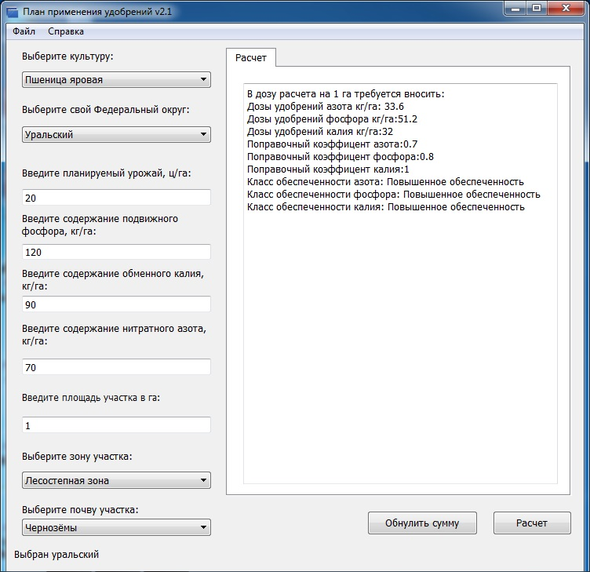
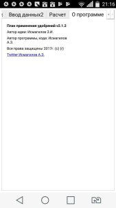
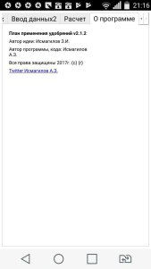

План применения удобрений v 2.1.0
Программа для расчета научно-обоснованных доз удобрений для сельскохозяйственных культур.
Внимание! Программа поддерживает Операционную Систему Windows XP с OpenGl
Лицензия:LGPL
Пожертвовать проекту План применения удобренийYandex.Деньги: Номер кошелька: 410011048556136
ОС: Windows XP, 7, 10.
Доступна демо-версия План применения удобрений v2.1.1.(zip с .exe) Также доступна демо-версия приложение(.APK) Android(zip c .apk) Спрашивайте демо-версию приложения и программыпо эл.почте. или email:progamailism@gmail.com

Демо-версия приложения Android(.APK) (zip с .APK)
 

Удобный интерфейс
Интерфейс программы позволит с удобством Вам проделывать свою работу.
Множество овощовых культур
Обилие большого количества овощовых культур позволит Вам с легкостью считать дозы для них Азота, Фосфора, Калия.
Простота работы
С помощью данной программы Вы запросто сосчитаете себе нормы удобрений для растений.
Полезна для растений
С этой программой Вы обязательно получите нужный Вам урожай.
Для чего она нужна?
Программа нужна для расчета доз удобрений для сельскохозяйственных культур.
Поддержка
Программа поддерживается государственной агрохимической службой.
Операционная система: Windows XP и выше + с обязательной поддержкой OpenGl.
На чем написана? Написана на языке C++ с использованием фреймворка Qt.